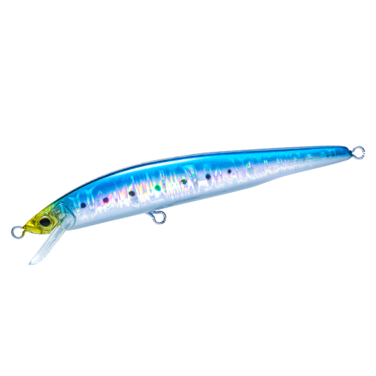
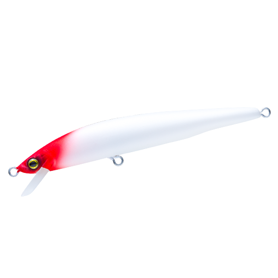
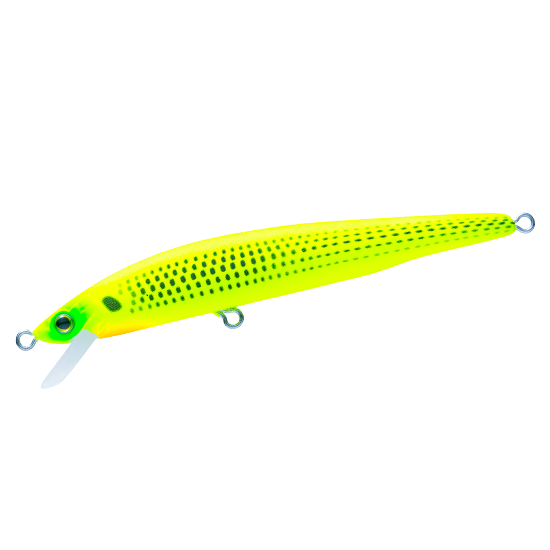

ハードコア R11
（HARDCORE R11）
ハードコア R11（HARDCORE R11）はDUEL（デュエル）のフローティングミノーです。
浅いレンジをロール主体の動きで攻める、喰わせ特化の「Rシリーズ」の110mmモデル。R11は喰わせの能力とアピール力のバランスに優れた万能サイズ。110mmの存在感がありながら、ロール主体の動きでプレッシャーの高いエリアでも魚を散らさずに誘えます。

画像出典:DUEL公式HP
スペック
- メーカー
- DUEL（デュエル）
- タイプ
- フローティングミノー
- 全長
- 110mm
- 自重
- 9g
- フック
- #6
- リング
- #3
- 飛距離
- MAX 40m
- レンジ
- 20〜60cm
- ターゲット
- チヌ・シーバス・サワラ（サゴシ）・ヒラスズキ
- 価格
- オープン価格
- 発売
- 2026年
▼今すぐチェック

ハードコア R11の特徴
細身×ロールで魚に違和感を与えない、喰わせ特化のスリムミノー
-
遠投と安定を両立するニューマグネット重心移動システム
キャスト時はウェイトがボディの最後尾まで移動して飛距離を生み、スイム時は腹部の強力マグネットとウェイトホールドカップで固定して泳ぎを安定させる。
-
不要なラトル音を抑えるウェイトホールドカップ
重心移動球の遊びを抑えてアクションのレスポンスを高めるパーツ。不要なラトル音もなくなり、よりナチュラルに近づける。
-
水面下20〜60cmのレンジをキープ
水面下20〜60cmのレンジをキープでき、シャローエリアの攻略を有利に進められる。チヌやサワラ（サゴシ）、ヒラスズキまで狙える。
ハードコア R11の使い方
基本はただ巻き。20〜60cmのレンジを保つ速さで巻き、ロールで見せ続けるのがコツです。強い流れでも泳ぎが安定するので、河川や河口でも使いやすいサイズです。
ハードコア R11の得意な状況
シャローエリアで、魚を散らさずに誘い続けたい場面が一番の出番です。
ベイトのサイズが中くらいの時に合わせやすく、シーバスからサワラ（サゴシ）まで幅広く狙えます。
強すぎない動きで見切られにくいので、人の多い場所でも釣れるチャンスを作りやすい1本です。
ワンポイント
濁りが入った時はマットチャートコノシロやブルピンに替えると、存在感を出しやすくなります。澄み潮ならイワシに戻しましょう。
ハードコア Rシリーズの使い分け
| モデル | 全長／自重 | 得意な場面 |
|---|---|---|
| R7 | 70mm／4.5g | シリーズ最小。極小ベイトとスレた魚に。チヌ狙いにも |
| R9 | 90mm／6g | 港湾や河川で使えるスタンダードサイズ |
| R11 | 110mm／9g | 喰わせとアピールのバランスが良い万能サイズ（本記事のモデル） |
| R13 | 130mm／13g | 遠くのポイントやボイル撃ちに。3フック仕様 |
| R15 | 150mm／20g | シリーズ最大。サーフや磯など広いエリアに |
5サイズとも同じカラーの全10色展開です。ベイトの大きさと、必要な飛距離で選びましょう。
人気カラー
ハードコア R11は全10色展開。人気カラーを紹介します。

イワシローテーションの軸になる王道カラー。デイゲームはもちろん、月夜や常夜灯周りでも使える。

マットパールレッドヘッドナイトゲームの超定番。日中でもはっきりしたシルエットで見せられる。

マットチャートコノシロ見やすいマットチャートにコノシロ柄を合わせたカラー。激濁りの河口や沿岸に。
 ブルピン
ブルピン
外洋の定番、ブルーとピンクの配色。イワシ系ではアピールが足りない時に。
画像出典:DUEL公式HP
▼今すぐチェック
ハードコア R11に似ているルアー
-
 ハードコア R9
デュエル
詳細はこちら＞
ハードコア R9
デュエル
詳細はこちら＞
同じシリーズの90mm・6g。ベイトが小さい時や、シルエットを控えめにしたい時に。
-
 ハードコア R13
デュエル
詳細はこちら＞
ハードコア R13
デュエル
詳細はこちら＞
同じシリーズの130mm・13g。飛距離MAX50mで、より遠くを狙いたい時に。
-
 コモモSF-110
ima
詳細はこちら＞
コモモSF-110
ima
詳細はこちら＞
全長110mm・自重12gのシャローランナー。同じサイズ感で、シャローを探る定番として比べたい。